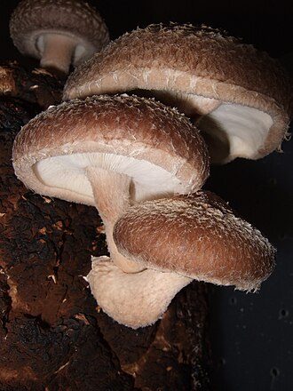

しいたけ（椎茸）の生産量 都道府県ランキング
1位から3位までと、とれた量
しいたけが日本でいちばん多くとれるのは徳島県です。6,632 tで、全国（7万3,821 t）の9.0%を占めます。

| 順位 | 都道府県 | 生産量 | 全国に占める割合 |
|---|---|---|---|
| 1位 | 徳島県 | 6,632 t | 9.0% |
| 2位 | 大分県 | 6,378 t | 8.6% |
| 3位 | 岩手県 | 4,363 t | 5.9% |
この数字について
- 分類：きのこの仲間
- 全国の生産量：7万3,821 t
- この数字が表すもの：生産量（とれた重さ）
- 調査：特用林産基礎資料 令和7年
- 47県分を調査（調査していない県は順位に入りません）
しいたけの生産量について、よくある質問
- しいたけの生産量が日本一の都道府県はどこですか？
- 徳島県です。特用林産基礎資料（令和7年）で6,632 tでした。
- しいたけの生産量ランキング2位・3位はどこですか？
- 2位は大分県（6,378 t）、3位は岩手県（4,363 t）です。
- しいたけの全国の生産量はどれくらいですか？
- 7万3,821 t（令和7年）です。